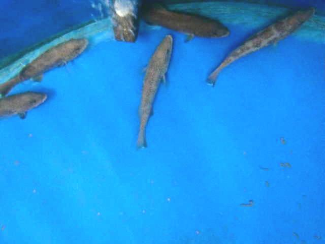
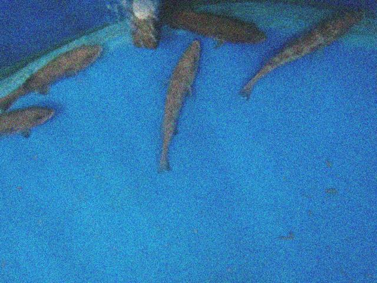
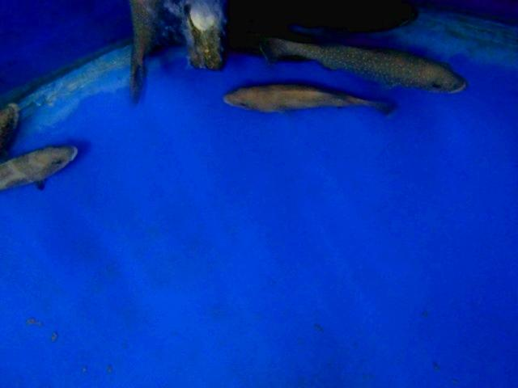
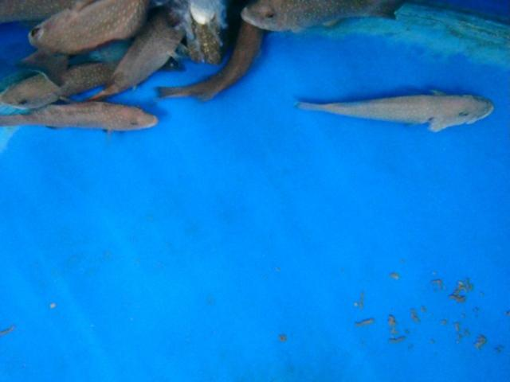
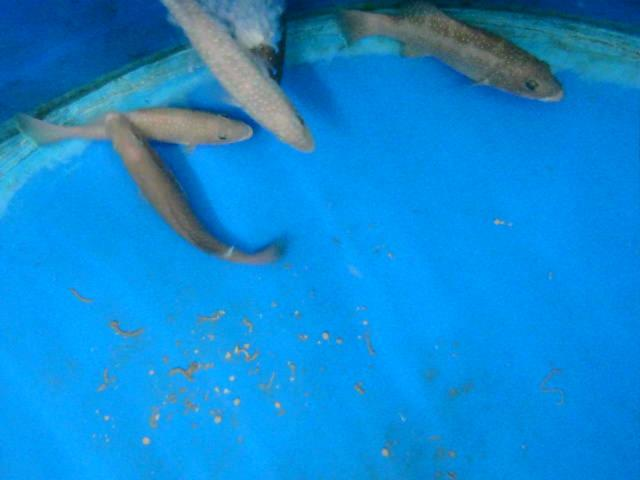
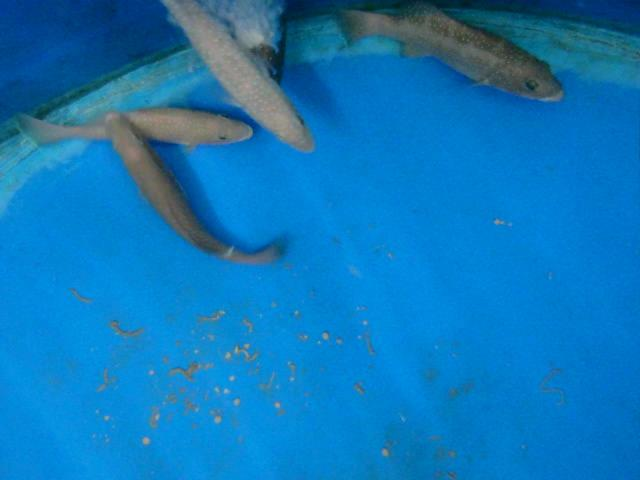
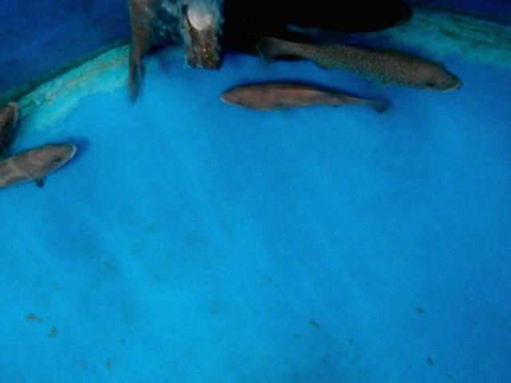
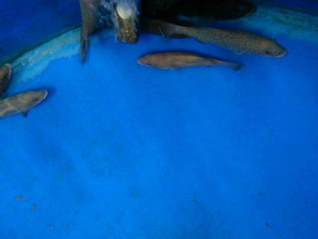

Resultados /
peces_obb-bezierfusion-todo
Precisión 76,7 % 880 aciertos, 268 falsos
Recall 80,7 % 210 no detectados
F1 78,6 % IoU ≥ 0.5
IoU medio 0,93 de los aciertos
Error de puntos – de la diagonal de la caja
Tiempo 57 ms por imagen
Modelo best.pt · confianza mínima 0.25 · imagen 1024 px · dataset completo
Dónde acierta y dónde se equivoca
219 de 428 imágenes sin ningún error.
En cada imagen: ✓ acierto (IoU ≥ 0.5), FP detección sin etiqueta, FN etiqueta sin detección.
Clic en una imagen para ver cajas, probabilidades y el mapa de atención.

punto 1 punto 2 punto 3 punto 4 punto 1 punto 2 punto 3 punto 4 punto 1 punto 2 punto 3 punto 4
033.jpg
0 ✓ · 3 FP · 3 FN

punto 1 punto 2 punto 3 punto 4 punto 1 punto 2 punto 3 punto 4 punto 1 punto 2 punto 3 punto 4
034.jpg
0 ✓ · 3 FP · 3 FN

punto 1 punto 2 punto 3 punto 4 punto 1 punto 2 punto 3 punto 4
01.jpg
0 ✓ · 3 FP · 2 FN
punto 1 punto 2 punto 3 punto 4 punto 1 punto 2 punto 3 punto 4 punto 1 punto 2 punto 3 punto 4 punto 1 punto 2 punto 3 punto 4
0129.jpg
1 ✓ · 2 FP · 3 FN
punto 1 punto 2 punto 3 punto 4 punto 1 punto 2 punto 3 punto 4 punto 1 punto 2 punto 3 punto 4 punto 1 punto 2 punto 3 punto 4
0130.jpg
1 ✓ · 2 FP · 3 FN
punto 1 punto 2 punto 3 punto 4 punto 1 punto 2 punto 3 punto 4 punto 1 punto 2 punto 3 punto 4 punto 1 punto 2 punto 3 punto 4
0131.jpg
1 ✓ · 2 FP · 3 FN

punto 1 punto 2 punto 3 punto 4 punto 1 punto 2 punto 3 punto 4 punto 1 punto 2 punto 3 punto 4 punto 1 punto 2 punto 3 punto 4
0132.jpg
1 ✓ · 2 FP · 3 FN
punto 1 punto 2 punto 3 punto 4 punto 1 punto 2 punto 3 punto 4
0166.jpg
0 ✓ · 3 FP · 2 FN

punto 1 punto 2 punto 3 punto 4 punto 1 punto 2 punto 3 punto 4
0167.jpg
0 ✓ · 3 FP · 2 FN

punto 1 punto 2 punto 3 punto 4 punto 1 punto 2 punto 3 punto 4
0172.jpg
0 ✓ · 3 FP · 2 FN

punto 1 punto 2 punto 3 punto 4 punto 1 punto 2 punto 3 punto 4
02.jpg
0 ✓ · 3 FP · 2 FN

punto 1 punto 2 punto 3 punto 4 punto 1 punto 2 punto 3 punto 4
023.jpg
0 ✓ · 3 FP · 2 FN